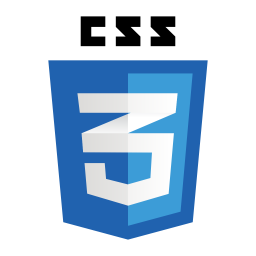
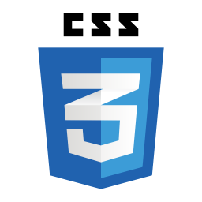

Profil personnel
Fort de plusieurs expériences professionnels j'ai connu beaucoup de milieu et sait m'adapter a tout types d'environnement de travail et féru d'ordinateur j'ai envie d'acquérir de nouvelles connaissances dans le domaine du développement.
Compétences et savoir-faire
 



Intérêts et loisirs
Passionnée de jeux vidéos depuis tout petit, je fais aussi du sport et j'aime bien la popculture.
Expérience professionnelle
- •Création d'entreprises
- - Educateur Comportementaliste canin (depuis juillet 2019)
- •Maraichage
- - Préparations de commandes (Avril-Septembre 2021)
- •Manutentionnaire Savonnerie Rampal latour
- - Travail a la chaine, empaquetage. (Juillet-Aout 2018).
- •Etudiant en apprentissage - CFA Port de Bouc
- - Entreprise génération piscine, St-Cannat, pose de piscine polyester, SAV, Réparations. (Sept 2014-2016)
- •Bac professionnel ELEEC
- - Stage de huit semaines - Entreprise EDF( Salon-de- provence) Surveillance des centrales hydroélectriques, Entretien des centrales hydroélectriques (Novembre 2013, Juin 2014)
- - Stage de huit semaines - Entreprise ERDF. Remplacement de transformateur, remplacement de ligne électrique, vérification de compteur électriques (gaz). (Mai - Juillet 2013)
- - Stage de huit semaines - Entreprise CFC. Pose de climatisation, pose de ballon d'eau chaude, SAV (Mai - Juin 2012)
Education
- •CFPPA (Janvier 2019)
- - Attestation de connaissances animaux de compagnies(chien).
- •Woodenpark (Mars 2017/Octobre 2018)
- - Educateur comportementaliste canin. Formation privée. - Equevillon
- •CFA Henry Rol-Tanguy (2014-2016)
- - Brevet professionnel métiers de la piscine (2014/2016)Pose de piscine, SAV réparations, Meilleur apprentirégional. - Port-de-Bouc
- •Lycée professionnel Latécoère (2011/2014)
- - Bac professionnel ELEEC (2011/2014) Electrotechnique énergie équipements communicants, Création d'installation électriques, réparation - Istres